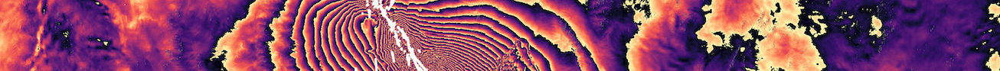

GMTSAR Documentation
Welcome to the documentation page for GMTSAR software!
GMTSAR is an open-source SAR processing system that enables users to complete data preparation, processing, and post-processing presentation all within one workflow system. This website contains searchable documentation for all active GMTSAR scripts and modules, as well as examples and recommended workflows for processing interferograms from multiple satellite sources, as well as processing InSAR time series.
Explore the tools, workflows and resources below!

Processing An Interferogram
Batch Processing and Time Series
Getting the Most Out of Your Data